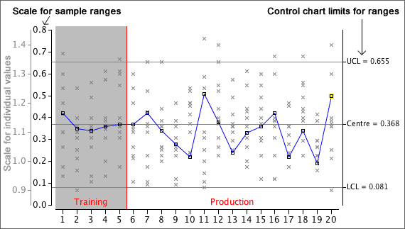

Detecting changes to process variability
A control chart of sample means is used to detect shifts in the 'centre' of a process. In a similar way, a control chart to assess whether the process variability has changed can be based on the spread of successive samples.
The most commonly used control chart for process variability is based on the sample ranges.

By separately targetting the process centre and variability with control charts for means and ranges, we can get better indications of any changes in the performance of the process, and we can therefore intervene more promptly to correct potential drops in quality.